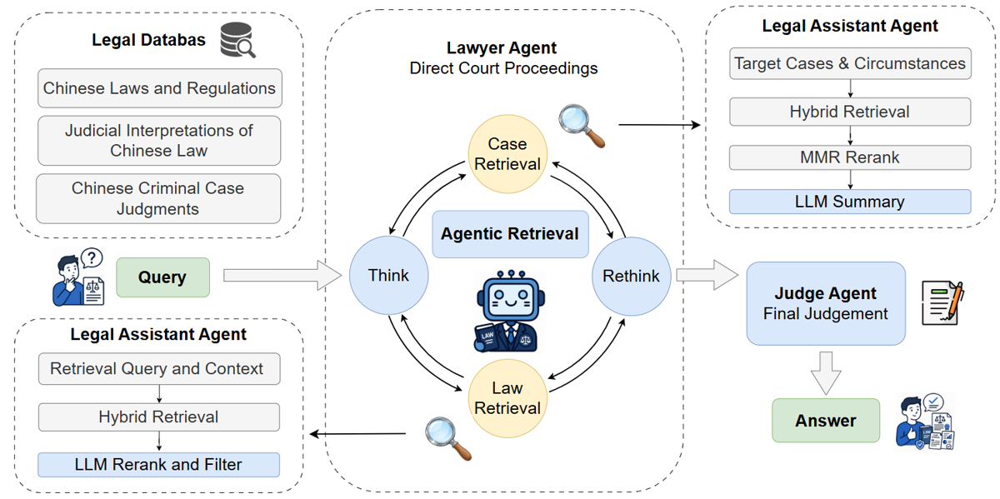
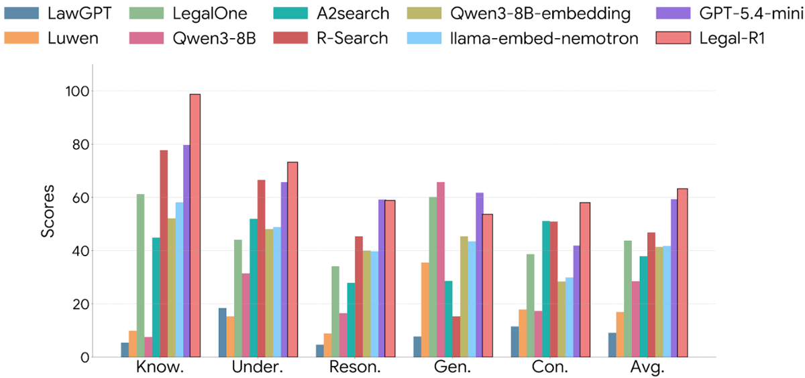
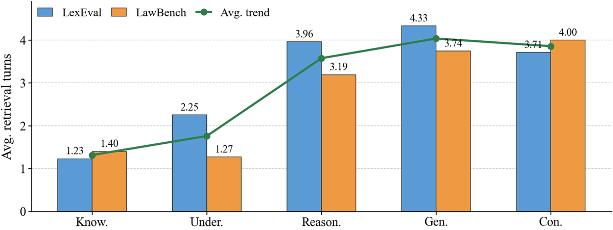

⚠️ Avertissement de lecture : certains détails d'optimisation absents du papier ont été vérifiés dans le dépôt public. Ils sont systématiquement marqués [repo …] et ne sont pas des affirmations du papier. Tout le reste renvoie au papier.
TL;DR — pipeline multi-agents (Lawyer planificateur / Legal Assistant retriever / Judge rédacteur) sur droit chinois, où seul le Lawyer est post-entraîné (SFT masqué sur les évidences puis GRPO à reward dense), avec un reranking de précédents intégrant autorité de la juridiction et diversité de sévérité des peines ; 60,28 de moyenne LexEval+LawBench à 8B [Tab. tab:main-result].
Claim principal, formulé précisément : apprendre une politique explicite de recherche d'évidence (quand chercher, quelle source, quelle requête, quand s'arrêter) bat le RAG one-shot sur deux benchmarks juridiques chinois, à base de modèle égale — 60,28 vs 55,91 pour Qwen3-8B + même retrieval hybride [Tab. tab:ablation_study], et +14,69 sur R-Search [§4.2].
⚠️ Mais le claim « RL » est le plus faible du papier : dans la décomposition SFT vs RL [Tab. tab:training_ablation — SFT vs RL], GRPO n'apporte que +0,30 point (59,98 → 60,28) sans seeds ni intervalle. L'essentiel du gain vient du retrieval (+28,06) et du SFT (+5,31). Lire ce papier comme un papier d'environnement et de harness juridique, pas comme une démonstration que le RL marche sur le droit.
Base de connaissances $\mathcal{K}$ [§3.1, §4 Data Construction] : - $\mathcal{K}{norm}$ : National Database of Laws and Regulations (flk.npc.gov.cn) — 296 lois actives / 43 117 articles + 555 interprétations judiciaires / 6 370 articles. Unité de retrieval = l'article, annoté titre de loi, chapitre, section, numéro d'article, date d'entrée en vigueur [§4.1 Normative Legal Corpus]. - $\mathcal{K}$ : LeCaRDv2 — 53 277 jugements pénaux, unité = le précédent, attributs structurés : niveau de juridiction, faits, dispositif, peine [§4.1 Criminal Precedent Corpus]. - Annotations ajoutées : tier d'autorité (3 niveaux : high people's courts 195 cas, score 1,1 ; intermediate 3 731 cas, 1,05 ; primary/local 49 351 cas, 1,0 [App. E.1]) et PSI (Punishment Severity Index) convertissant une peine en scalaire : $PSI = D\cdot\alpha\cdot\phi + \sum S_{sup}$, avec réclusion à temps $\alpha=1{,}0$, détention criminelle 0,8, surveillance publique 0,3, sursis $\phi=0{,}2$, perpétuité/mort = valeurs ordinales discrètes 15 000 / 100 000, amendes $S_{fine}=20\log_{10}(montant+1)$ [App. E.2, Tab. 9]. ⚠️ Barème entièrement ad hoc, aucune validation contre une échelle de sévérité reconnue : c'est une heuristique, pas une mesure.
Origine des tâches d'entraînement [§4.2, App. F] : bénchmarks publics + examen professionnel, converties en QA par modèle. Sources : CAIL, DISC-LawLLM, CrimeKgAssitant, Examen national unifié de qualification professionnelle juridique, plus des jeux synthétiques maison. Générateur : DeepSeek-V3, température 0,1 [App. F.2].
Pipeline de construction [App. F.2–F.6], étape par étape : 1. Applicability gating en deux temps : (a) appariement grossier tâche↔matériau sur métadonnées/type de source ; (b) pré-vetting par modèle, décision binaire + justification courte sur la présence des prédicats factuels / entités / conditions normatives requis ; sinon l'instance est jetée et comptée comme discarded [App. F.3]. 2. Synthèse des paires QA par template de tâche (description de tâche, format d'entrée, format de sortie, prompt de génération dédiés par type) [App. F.1]. 3. Filtrage de contamination par fingerprint : chaque échantillon des benchmarks held-out décomposé en 20-grammes exacts après normalisation (espaces, ponctuation, variantes de format) ; tout texte source dont un 20-gramme recoupe la bibliothèque au-delà d'« un seuil prédéfini » est écarté avant génération, au niveau du texte source et non de la paire QA [App. F.4]. Seuil : non précisé. 4. Answer leakage suppression : (a) substring matching réponse∈question ; (b) regex sur les valeurs porteuses de réponse (expressions de peine, type de sanction, durée, amende, sursis) [App. F.5]. 5. Distracteurs rule-driven pour les QCM : value swapping (réattribuer une valeur authentique — acteur, montant, date, peine — à la mauvaise entité) et wrong label assignment (associer une entité correcte à un mauvais label juridique), puis contrôle d'unicité et shuffle de la position de la bonne réponse [App. F.6]. 6. Assemblage : chaque instance porte instruction, question, réponse, options éventuelles, evidence de support, métadonnées, et pour les tâches outillées des annotations d'invocation d'outil [App. F.7].
Volume : 18 940 instances QA structurées, 5 grands domaines, 29 sous-catégories [§4.2, Tab. 10]. Répartition : Understanding 7 423 (39,2 %), Reasoning 4 707 (24,9 %), Generation 2 928 (15,5 %), Consultation 2 582 (13,6 %), Knowledge Retrieval 1 300 (6,9 %) [Fig. fig:training_data_distribution, Tab. tab:dataset_stats_v2]. Queue très déséquilibrée dans le détail : Contract Generation 8 instances, Case Similarity 101, Relation Understanding 68, Evidence Opinion 158 vs 1 000 pour les sous-tâches plafonnées [Tab. tab:dataset_stats_v2].
Trajectoires SFT [§3.3 Trajectory Synthesis] : un teacher $\mathcal{L}_{Teacher}$ joue le Lawyer et interagit réellement avec le Legal Assistant (donc evidences réelles, pas hallucinées) ; la trajectoire est enregistrée jusqu'au Stop + réponse finale. Identité du teacher : non précisé (DeepSeek-V3 n'est explicité que pour la génération des QA). Taille de $D_{SFT}$ : non précisé (les 18 940 sont des QA, pas des trajectoires). Nombre de prompts RL : non précisé ([repo] le fichier d'entraînement RL est data/train_data/RL/train_subset.parquet, donc un sous-ensemble).
Distribution de difficulté : axe « increasing difficulty » revendiqué sur Fig. 2 mais aucune métrique de difficulté (pass@k, taux de réussite du modèle de base) — non précisé. Aucun filtrage par pass@k du base model, contrairement à l'usage RLVR.
Curriculum : aucun. Pas de rééchantillonnage, pas d'ordre — non précisé / absent.
Contamination & séparation train/test : traitée en amont par les 20-grammes contre les benchmarks held-out (LexEval, LawBench) [App. F.4]. ⚠️ Mais les sources d'entraînement (CAIL, DISC-LawLLM, examen de qualification) chevauchent les sources de LawBench/LexEval ; le filtre 20-grammes exact ne capture pas une reformulation. Et le corpus de retrieval ($\mathcal{K}_{norm}$) contient par construction les réponses de LawBench 1-1 (texte littéral des articles) — ce n'est pas une contamination au sens strict, mais cela explique le 98,70 en catégorie Knowledge [Fig. fig:lexeval_category_performance] et rend la comparaison aux modèles sans retrieval peu informative sur le « raisonnement ».
Données SFT/IFT avant RL : oui, obligatoires ici — Evidence-Masked SFT (cf. §2/§4), 3 epochs, lr $5\times10^{-6}$, batch 32 [§4.1, App. B.2]. Rôle : apprendre le protocole d'outil (format des tags, timing de retrieval) sans mémoriser les textes retrouvés.
Coût humain : aucun annotateur humain mentionné — pipeline 100 % automatisé [App. F]. Aucune validation experte du dataset produit. Non précisé = probablement zéro heure d'expert.
Observation par tour [§3.2.1] : question $q$ + historique $(r_1,u_1,s_1,e_1,\dots)$, où $e_j$ est une unité d'évidence compacte — pas le document brut : pour les normes, provisions filtrées/rerankées par $\mathcal{L}{norm}$ ; pour les précédents, un case brief de 150 mots produit par $\mathcal{L}$ (faits, niveau de juridiction, dispositif, peine) [§3.2.2, App. A.2]. Donc compression systématique de l'observation par un LLM auxiliaire — choix de design central, et l'ablation w/o summarization est la plus coûteuse de toutes [Tab. tab:lawbench_additional_ablation].
Espace d'actions [§3.2.1] — trois actions seulement :
u_j ∈ { STATUTE, PRECEDENT, STOP }
STATUTE : requête + intention de retrieval courte (localiser une fourchette de peine, identifier les éléments constitutifs, trouver une clause d'exception) → retrieval dans $\mathcal{K}_{norm}$ puis rerank LLM conditionné sur l'intention.PRECEDENT : description des faits cibles + circonstances optionnelles → candidats de $\mathcal{K}_{case}$, sélection MMR autorité/diversité, puis résumé.STOP : évidence jugée suffisante → passage au Judge.
Aucune signature d'outil formelle n'est donnée dans le papier. Format effectif, visible dans les prompts et le vérifieur : tags <search> (JSON de requête), <information> (retour d'outil), <answer>, <syllogism> [App. A.3, App. B.2 ; confirmé [repo RL_utils/verl/utils/reward_score/local_LLM_judgement_grpo.py]].Multi-turn : oui, boucle Think → Retrieval → Rethink [Fig. fig:agentic_workflow]. Horizon typique mesuré : 1,23–2,25 tours sur Knowledge/Understanding et 3,19–4,33 sur Reasoning/Generation/Consultation [Fig. fig:avg_turn] ; moyenne LawBench 2,33 [Tab. tab:lawbench_efficiency_added]. Horizon maximal : non précisé dans le papier ([repo RL.sh] +max_turns=9).
Gestion du contexte long : par compression d'évidence (rerank top-k + brief 150 mots), pas de résumé de trajectoire ni de mémoire externe. Budget de contexte : non précisé ([repo RL.sh] max_prompt_length=25000, max_response_length=1200, max_obs_length=2000, max_start_length=4000).
Exécution [App. B.3] : pas de sandbox ni de simulateur — un retriever hybride BM25 + text2vec servi localement (≈ 8 GB de VRAM) plus trois instances vLLM (Lawyer = Legal-R1, Legal Assistant Qwen3-8B, Judge Qwen3-8B). Déterminisme : température de décodage 0,0 en évaluation, max_retries=5 [App. B.1]. L'index étant statique, l'environnement est déterministe et reproductible, modulo le non-déterminisme de vLLM — avantage majeur sur un env web réel. Reset / timeouts : non précisé.
Gestion des erreurs d'outils et des sorties mal formées : rien dans le corps du papier. Deux mécanismes seulement : le reranker normatif a pour consigne explicite de renvoyer [] si aucun candidat ne correspond au contexte (« If no matching text is found, return [] directly », « It is strictly forbidden to return irrelevant text just to reach the {topk} limit ») [App. A.1], et un retour vide est verbalisé « 无检索内容 » / noté 1/4 par le juge de reward [App. A.1 ; [repo]]. Aucun protocole de retry côté agent, aucune statistique de malformation. Non précisé.
Exemple de trajectoire (recopié, [Tab. tab:case_study] ; version complète [Fig. fig:case_study_full]) :
Query : mon ami a emprunté 164 000 RMB, n'a pas remboursé, a été condamné à payer sous 25 jours. S'il ne paie toujours pas, sera-t-il automatiquement inscrit sur la liste des débiteurs déloyaux ? Thinking 1 : localiser les critères statutaires de l'inscription → Retrieval 1 (Statute) : Dispositions de la Cour populaire suprême sur la publication des informations relatives à la liste des débiteurs judiciaires déloyaux, art. 1. Thinking 2 : l'art. 1 repose sur la « capacité d'exécution » ; récupérer son interprétation → Retrieval 2 (Statute) : art. 2. Thinking 3 : chercher les clauses d'exemption procédurale → Retrieval 3 (Statute) : art. 3. Thinking 4 : valider la pratique judiciaire → Retrieval 4 (Precedent) : affaire Xiang Mo, refus volontaire d'exécution après notification… Answer (Judge) : non, l'inscription n'est pas automatique ; critère = « capacité d'exécuter mais refus volontaire » ; exemptions de l'art. 3 (garantie suffisante, actifs gelés déjà suffisants) ; appréciation au cas par cas. Base légale : art. 1 et 3 des Dispositions.
⚠️ La légende de [Fig. fig:case_study_full] dit elle-même « An idealized snapshot » — c'est une trajectoire choisie/retouchée, pas un échantillon aléatoire. Aucune trajectoire d'échec n'est montrée.
D'où vient le signal — réponse nette : il n'y a aucun vérifieur exact ni aucune exécution. Le reward vient à ~60 % d'un juge LLM Qwen3-8B non validé, et à ~40 % de règles de format. Détail :
$$R = w_1 R_{acc} + w_2 R_{align} + w_3 R_{gain} + w_4 R_{query} + R_{fmt} - \rho - \eta\,\mathrm{KL}$$ avec $w_1=1{,}00$, $w_2=0{,}08$, $w_3=0{,}32$, $w_4=0{,}20$, $\eta=0{,}08$ [§3.3, App. B.2].
| Terme | Source du signal | Granularité |
|---|---|---|
| $R_{acc}$ | juge LLM : compare la réponse finale à la réponse de référence du teacher | 1–4 (crédit partiel), outcome |
| $R_{align}$ | juge LLM : compare la trajectoire échantillonnée à la trajectoire du teacher (timing et stratégie de retrieval) | 1–4, process |
| $R_{gain}$ | juge LLM : les évidences retrouvées soutiennent-elles la réponse de référence | 1–4, process |
| $R_{query}$ | score du retriever reporté dans les blocs <information>, moyenné |
continu, process |
| $R_{fmt}$ | règles : tags answer, search, information valides |
binaire par règle |
| bonus | nombre de search proche de la trajectoire de référence |
binaire |
| $\rho$ | pénalité bornée de longueur de trajectoire | continu |
Type : hybride juge LLM + règles de format, sans aucune composante exécutable ni exact match. Le « ground truth » est la trajectoire+réponse du teacher, pas une vérité juridique. C'est donc une distillation on-policy notée par un juge, pas du RLVR.
Granularité : process + outcome, crédit partiel sur échelle 1–4 ; agrégation par somme pondérée avec les poids ci-dessus [App. B.2].
Si juge LLM — modèle, prompt, rubriques [App. B.2 pour le modèle ; rubriques reconstituées [repo] car le papier ne recopie pas le prompt de reward, contrairement aux trois prompts du workflow] : juge = une instance Qwen3-8B co-hébergée sur le GPU 3 (~50 % de sa mémoire) pendant le GRPO [App. B.2 Training Deployment]. ⚠️ Donc le juge de reward est le même modèle que la policy initiale (Qwen3-8B), et le même que l'assistant de retrieval.
Rubriques (traduites, [repo local_LLM_judgement_grpo.py], hors-papier) — sortie forcée en JSON {"accuracy","alignment","info_gain"} :
- accuracy : 4 = conclusion totalement exacte, faits clés alignés sur la référence ; 3 = globalement correcte, détails manquants ou erreur mineure ; 2 = partiellement fausse ; 1 = erreur grave, contradiction, réponse vide ou charabia.
- alignment : 4 = timing et stratégie de retrieval très proches de la trajectoire de référence ; 3 = léger écart mais raisonnable ; 2 = nœud de retrieval nécessaire manqué, ou retrievals redondants/inefficaces ; 1 = aucune recherche là où il en fallait, ou abus extrême de l'outil.
- info_gain : 4 = information très précise, soutient directement la référence ; 3 = partiellement pertinente, contexte ; 2 = information marginale ; 1 = hors sujet ou retrieval vide.
Fiabilité du vérifieur : jamais mesurée. Aucune précision, aucun accord inter-annotateur, aucun taux de faux positifs/négatifs, aucune comparaison à des juristes — ni pour le juge de reward, ni pour le juge d'évaluation. ❌ C'est le trou central du papier et il n'est même pas listé dans les Limitations [§6].
Robustesse / attaque : non testée. Aucune section sur le reward hacking. ⚠️ Vulnérabilités structurelles lisibles dans la conception :
1. Le format vaut presque autant que la justesse. [repo] $R_{fmt}$ = 0,50 (format valide) + 0,25 (JSON de search valide) + 0,25 (tags information bien appariés) = 1,00, exactement le poids maximal de $R_{acc}$ (1,00 à 4/4). Une trajectoire bien balisée avec une réponse juridiquement fausse récolte ≈ 1,0 + 0,25·(1/4 accuracy) ; une réponse parfaite mais mal balisée en récolte moins. Le papier ne mentionne pas ce ratio.
2. $R_{query}$ est le score du retriever, pas la qualité juridique. Maximiser des scores BM25/dense récompense les requêtes qui recopient du texte statutaire, pas celles qui explorent un point litigieux.
3. $R_{align}$ ancre la politique sur le teacher, ce qui plafonne le RL à l'imitation : l'agent ne peut pas découvrir une stratégie de recherche meilleure que celle du teacher sans être pénalisé. Cohérent avec le +0,30 observé [Tab. tab:training_ablation — SFT vs RL].
4. Juge = policy de départ → biais d'auto-évaluation et plafond de capacité : un Qwen3-8B ne peut pas trancher la justesse d'un raisonnement juridique mieux qu'un Qwen3-8B.
5. ⚠️ Incohérence interne : la Related Work annonce « a multi-tier dense reward function anchored by a fine-tuned critique model » [§2] alors que l'annexe ne décrit qu'une instance Qwen3-8B utilisée telle quelle [App. B.2] — aucun fine-tuning de critique n'est décrit nulle part. Verdict : introuvable.
Vérifieur d'évaluation (distinct) : scores natifs des benchmarks (« Trad. Score ») + LLM-as-a-judge. ❌ Le juge d'évaluation est ambigu : les légendes de [Tab. tab:main-result], [Tab. tab:ablation_study] disent « Judge by DeepSeek-V4-Flash-Preview », le texte de §4.1 dit « the primary models and the judge model (Qwen3-8B) are deployed via vLLM […] and compute the final scores ». Les deux ne peuvent pas être vrais. Dans la lecture « DeepSeek-V4 », le juge est aussi le baseline le mieux classé (66,47) — conflit d'intérêt méthodologique. Prompt du juge d'éval : non précisé.
Algorithme : SFT masqué → GRPO [§3.3, §4.1]. Écart à la version standard : (i) reward dense multi-terme décrit ci-dessus plutôt qu'un vérifieur binaire ; (ii) masque d'évidence en SFT, $m_t=0$ sur tous les tokens appartenant aux $e_j$ retournés par l'outil, $m_t=1$ ailleurs [§3.3] — le même masquage de tokens d'observation est standard dans Search-R1 et s'applique aussi au RL ([repo] fork RL_utils/search_r1), mais le papier ne le dit que pour le SFT.
Hyperparamètres rapportés dans le papier [§4.1 + App. B.2] :
| Paramètre | Valeur papier |
|---|---|
| SFT | 3 epochs, lr $5\times10^{-6}$, batch 32, masque sur evidence |
| GRPO lr | $1\times10^{-6}$ |
| GRPO batch | 32 |
| Rollouts / prompt (taille de groupe) | 8 |
| Coefficient KL $\eta$ | 0,08 |
| Référence KL | non précisé (implicitement le modèle SFT) |
| Calcul et normalisation de l'advantage | non précisé |
| Clipping | non précisé |
| On/off-policy | non précisé |
| Longueur max de génération | non précisé |
| Nombre de steps | non précisé |
| Température de sampling | non précisé |
| Pondérations de reward | $w_1=1{,}00$, $w_2=0{,}08$, $w_3=0{,}32$, $w_4=0{,}20$ |
⚠️ Pour un papier dont la contribution annoncée est le post-training RL, la moitié de la configuration GRPO est absente : ni steps, ni température, ni longueur, ni normalisation de l'advantage, ni courbe d'apprentissage.
Complément hors-papier [repo RL.sh L167–219], utile parce que c'est précisément ce qui manque — à citer comme dépôt, jamais comme résultat du papier :
algorithm.adv_estimator=grpo · data.train_batch_size=9 · ppo_mini_batch_size=9 · ppo_micro_batch_size_per_gpu=6 · rollout.n=8 · rollout.temperature=0.5 · optim.lr=1e-6 · use_kl_loss=true, kl_loss_coef=0.08, kl_loss_type=low_var_kl · algorithm.use_kl_in_reward=false · entropy_coeff=0 · max_prompt_length=25000, max_response_length=1200, max_obs_length=2000 · max_turns=9 · total_epochs=2, total_training_steps=1801, save_freq=30 · backend vLLM, 3 GPU FSDP.
Deux divergences papier↔dépôt : (a) batch 32 (papier) vs train_batch_size=9 (script) ; (b) la KL est écrite dans le reward dans la formule du papier ($-\eta\,\mathrm{KL}$) alors que le script la met dans la loss (use_kl_in_reward=false, use_kl_loss=true) — formulation du papier inexacte. rollout.n=8 et 0,08, eux, concordent.
Stabilité : rien. Aucune instabilité rapportée, aucune astuce, aucune piste abandonnée. Non précisé.
Compute [App. B.2] : un nœud, 4× NVIDIA H20 141 GB ; GPU 0–2 pour FSDP + génération de rollouts ; GPU 3 pour l'infra (retriever hybride ≈ 8 GB, Legal Assistant Qwen3-8B ≈ 40 % de la mémoire, reward judge Qwen3-8B ≈ 50 %). Durée d'entraînement et GPU-heures : non précisé.
Dynamique : aucune courbe de reward, de longueur de réponse ni d'entropie. Non précisé — on ne peut donc ni vérifier la convergence, ni voir un éventuel effondrement d'entropie, ni dater un hacking. ⚠️ Pour un papier RL c'est une omission de premier ordre, d'autant que le gain RL final est de +0,30.
Le papier n'en mentionne aucun. Zéro cas de reward hacking, zéro comportement dégénéré, zéro analyse d'erreur quantitative. Les Limitations [§6] ne listent que la latence d'inférence et la restriction au droit chinois ; la section Potential Risks [App. H] ne parle que de risques de déploiement (hallucination résiduelle, sur-confiance de l'utilisateur, limites juridictionnelles), pas de pathologies d'entraînement.
Crédible ? Non, pas vu la conception du reward. Arguments :
- Avec un reward dont ~40 % du maximum atteignable est purement formel (§3, point 1), une politique qui optimise le format avant la justesse est le point fixe attendu ; rien dans le papier ne permet d'exclure que c'est exactement ce qui s'est passé — et le +0,30 de gain après GRPO [Tab. tab:training_ablation — SFT vs RL] est cohérent avec « le format était déjà appris au SFT, le RL n'a plus grand-chose à gratter ».
- $R_{align}$ + bonus sur le nombre de search proche de la référence récompensent la conformité au teacher, donc découragent toute exploration : un collapse vers « imiter le nombre de tours du teacher » serait invisible sans courbes.
- Seul garde-fou anti-verbosité : la pénalité bornée de longueur $\rho$ [App. B.2] ([repo] plafonnée à 0,6, linéaire en nombre de caractères) — garde-fou contre la verbosité, pas contre la vacuité.
- Un indice indirect de pathologie est visible mais non commenté : en catégorie Generation de LexEval, Legal-R1 (53,68 [Fig. fig:lexeval_category_performance]) passe sous Qwen3-8B vanilla (65,74 selon la table par catégorie laissée en commentaire dans la source LaTeX, non publiée) ; sur LawBench Consultation, Legal-R1 64,55 vs Qwen3-8B 69,14 (idem). Le post-training dégrade les tâches de génération longue — exactement le profil « la politique a appris à chercher et citer, au détriment de la rédaction ». ⚠️ Ces chiffres proviennent d'une table commentée dans full.tex (donc absente du PDF) : à traiter comme un signal, pas comme un résultat publié.
Comportement émergent positif revendiqué : mise à l'échelle adaptative du nombre de tours selon la complexité de la tâche [Fig. fig:avg_turn, §4.2 Efficiency] — mais partiellement appris en SFT (les trajectoires du teacher ont déjà cette propriété), aucune ablation n'isole la part du RL.
tab:lawbench_efficiency_added, App. C] : 2,33 tours et 10 861,85 tokens en moyenne sur LawBench, contre 0,35 tour / 5 196,62 tokens pour Qwen3-8B + hybrid, et 4,35 tours / 37 226,08 tokens pour AutoRefine-Qwen2.5-7B. ⚠️ La ligne GPT-5.4-Mini affiche 399,23 tokens et un tiret pour les tours : invraisemblable (inférieur à un simple prompt juridique) — métrique manifestement non comparable, non expliquée.| Chiffre annoncé | Où il est annoncé | Source dans le papier | Verdict |
|---|---|---|---|
| « improves over general-purpose, legal-specific, and retrieval-augmented baselines » | abstract | [Tab. tab:main-result] : bat legal-specific (LegalOne 35,84), RAG (R-Search 45,59), GPT-5.4-Mini (56,87) ; perd contre DeepSeek-V4-Flash-Preview 66,47 vs 60,28 |
sur-généralisé (faux pour le general-purpose 284B ; vrai pour les deux autres familles et pour GPT-5.4-Mini) |
| moyenne globale 60,28 | abstract/§4.2/conclusion | [Tab. tab:main-result] ligne Legal-R1 : 57,36 / 63,97 / 56,54 / 63,28 → moyenne 60,28 |
confirmé |
| « outperforms the strongest RAG baseline, R-Search, by 14,69 points » | §4.2 | 60,28 − 45,59 = 14,69 [Tab. tab:main-result] |
confirmé |
| « exceeds GPT-5.4-Mini by 3,41 points » | §4.2 | 60,28 − 56,87 = 3,41 [Tab. tab:main-result] |
confirmé |
| « state-of-the-art overall average score of 60,28 % » | conclusion §5 | [Tab. tab:main-result] : DeepSeek-V4 66,47 dans le même tableau |
contredit (60,28 vs 66,47) ; §4.2 reconnaît pourtant « ranks second » — incohérence interne conclusion↔corps |
| hybrid retrieval : 27,85 → 55,91 | §4.2 Ablation | [Tab. tab:ablation_study] |
confirmé |
| post-train sans retrieval : +18,03 | §4.2 Ablation | [Tab. tab:ablation_study] : 45,88 − 27,85 = 18,03 |
confirmé |
| SFT : « prominent performance leap of 5,31 » | §4.2 SFT vs RL | [Tab. tab:training_ablation — SFT vs RL] : 59,98 − 54,67 = 5,31 |
confirmé (⚠️ la ligne de base est étiquetée « Qwen3-8B » dans [Tab. tab:training_ablation — SFT vs RL] alors que 54,67 est le « Qwen3-8B w/ rerank » de [Tab. tab:ablation_study] — étiquetage trompeur) |
| RL « further elevate […] to a peak of 60,28 % », « unlock maximum precision » | §4.2 SFT vs RL | [Tab. tab:training_ablation — SFT vs RL] : 60,28 − 59,98 = +0,30, sans seeds ni IC |
sur-généralisé : gain réel +0,30 point, présenté comme la validation du RL |
| « gains come from both learned retrieval policies and legal-evidence-aware reranking » | contributions §1 | [Tab. tab:ablation_study] : rerank vs hybrid = +0,73 pour Legal-R1 (59,55→60,28) mais −1,24 pour Qwen3-8B (55,91→54,67) ; [Tab. tab:lawbench_additional_ablation] w/o LLM rerank = 57,35 vs 57,36 en Trad. Score (nul), 62,99 vs 63,97 en LLM judge |
sur-généralisé (le rerank n'aide que couplé au modèle post-entraîné, et seulement sur la métrique juge) |
| « 1,2–1,7 turns for Knowledge and Understanding tasks » | §4.2 Efficiency | [Fig. fig:avg_turn] : Know. 1,23 / 1,40 ; Under. 2,25 / 1,27 |
contredit (plage réelle 1,23–2,25) |
| « 3,1–4,3 turns for Reasoning, Generation, Consultation » | §4.2 Efficiency | [Fig. fig:avg_turn] : 3,19 / 3,96 ; 3,74 / 4,33 ; 3,71 / 4,00 |
confirmé (arrondi) |
| turns 0,35 → 2,33 et tokens 5 196,62 → 10 861,85 | §4.2 Efficiency | [Tab. tab:lawbench_efficiency_added] |
confirmé |
| nDCG 0,6993 → 0,7659 vs BM25 | §4.2 Statute retrieval | [Tab. tab:retrieval_quality] |
confirmé sur les 769 requêtes, mais mesure le pipeline de retrieval, pas la politique RL |
| « multi-tier dense reward anchored by a fine-tuned critique model » | §2 Related Work | [App. B.2] ne décrit qu'une instance Qwen3-8B de reward judge ; aucun fine-tuning décrit | introuvable |
| juge d'évaluation | légendes [Tab. tab:main-result/tab:ablation_study] « Judge by DeepSeek-V4-Flash-Preview » vs §4.1 « the judge model (Qwen3-8B) […] compute the final scores » |
les deux assertions sont dans le papier | contredit (contradiction interne non résolue) |
| LawBench 1-1 : 364/500 questions améliorées par RAG+rerank | App. D | [App. D] (chiffre agrégé, aucune table) | confirmé tel qu'énoncé, non vérifiable |
| Système | Échelle | Retrieval | LawBench Trad. | LawBench Juge | LexEval Trad. | LexEval Juge | Moy. | Δ vs Legal-R1 |
|---|---|---|---|---|---|---|---|---|
| DeepSeek-V4-Flash-Preview | 284B | ✗ | 62,40 | 68,77 | 61,81 | 72,90 | 66,47 | +6,19 |
| Legal-R1 | 8B | ✓ | 57,36 | 63,97 | 56,54 | 63,28 | 60,28 | — |
| GPT-5.4-Mini | — | ✗ | 54,83 | 62,83 | 50,50 | 59,32 | 56,87 | −3,41 |
| R-Search | 7B | ✓ | 43,01 | 47,44 | 45,05 | 46,85 | 45,59 | −14,69 |
| A2search | 7B | ✓ | 46,82 | 49,14 | 35,23 | 37,94 | 42,28 | −18,00 |
| Qwen3-8B-Embedding | 8B | ✓ | 32,92 | 43,25 | 35,79 | 41,40 | 38,34 | −21,94 |
| LegalOne | 8B | ✗ | 23,25 | 41,02 | 35,30 | 43,79 | 35,84 | −24,44 |
| Qwen3-8B (base) | 8B | ✗ | 24,70 | 40,20 | 18,04 | 28,47 | 27,85 | −32,43 |
[Tab. tab:main-result] |
Décomposition du gain, même modèle de base [Tab. tab:ablation_study, Tab. tab:training_ablation] : base 27,85 → +hybrid 55,91 (+28,06) → +rerank 54,67 (−1,24) → +SFT 59,98 (+5,31) → +GRPO 60,28 (+0,30). Le RL pèse 1 % du gain total.
In-distribution vs OOD : les deux benchmarks d'évaluation (LexEval, LawBench) sont les mêmes familles de sources que les données d'entraînement (CAIL, examen de qualification) et le même ordre juridique ; le filtre 20-grammes limite la copie littérale mais pas le transfert de distribution. Aucune évaluation OOD : pas d'autre juridiction, pas de tâche hors droit, pas de test de généralisation du Lawyer à un Judge différent — alors que le découplage Lawyer/Judge est présenté deux fois comme un avantage [§1, §3.3]. Non mesuré.
Transfert vers d'autres envs : non mesuré.
Ablations — ce qui compte vraiment :
1. Le retrieval : +28,06 points, de loin le premier facteur [Tab. tab:ablation_study].
2. Le SFT de domaine : +18,03 sans retrieval, +5,31 au-dessus du pipeline RAG [Tab. tab:ablation_study, Tab. tab:training_ablation].
3. La compression des évidences (summarization) : la retirer coûte −4,41 Trad. (57,36→52,95) et −2,53 juge [Tab. tab:lawbench_additional_ablation] — deuxième composant le plus important, et il est hors du périmètre appris.
4. Le planning adaptatif vs tours fixes : 57,36 contre 53,95 (1 tour) et 54,65 (3 tours) [Tab. tab:lawbench_additional_ablation] ; les auteurs notent eux-mêmes que les variantes à tours fixes modifient aussi le prompt et la procédure, donc l'ablation n'est pas propre.
5. Le rerank LLM : ~0 sur la métrique traditionnelle (57,35 vs 57,36), +0,98 sur le juge [Tab. tab:lawbench_additional_ablation].
6. GRPO : +0,30 [Tab. tab:training_ablation — SFT vs RL].
Scaling : aucun. Une seule taille de modèle (8B), un seul volume de données, un seul budget de compute. Non mesuré.
tab:training_ablation — SFT vs RL] — et c'est précisément elle qui la dégonfle.tab:main-result] ; juge d'évaluation contradictoire (DeepSeek-V4 vs Qwen3-8B) ; plage de tours 1,2–1,7 contredite par [Fig. fig:avg_turn] ; « fine-tuned critique model » sans référent ; batch 32 contredit par le script publié.fig:lexeval_category_performance], 87,75 LawBench) parce que la réponse est le texte de l'article présent dans l'index.SFT.json, train_subset.parquet) et scripts publiés et consultables sur GitHub, fork verl/Search-R1 identifiable. Poids du modèle : non vérifiés. C'est la meilleure case du papier.Verdict : plausible mais fragile. L'environnement, le harness et le pipeline de données sont réels, détaillés et reproductibles — c'est la valeur du papier. La partie RL, qui lui donne son nom, n'est pas démontrée : +0,30 point sans seeds, sans courbes, sans hyperparamètres complets, avec un reward dont ~40 % du maximum est formel et dont le juge n'a jamais été validé. À répliquer sur la seule question « que fait réellement le GRPO ici », en instrumentant le reward par composante.
| Case | Verdict | Justification |
|---|---|---|
baselines |
✅ vrai | Qwen3-8B base / +hybrid / +rerank / +SFT, même base model et même KB pour les baselines RAG [§4.1, Tab. 3]. |
ablation |
✅ vrai | [Tab. tab:training_ablation — SFT vs RL] isole SFT vs RL ; [Tab. tab:lawbench_additional_ablation] isole rerank, summarization, tours fixes. |
variance |
❌ faux | Aucun seed, aucun IC, aucune répétition nulle part. |
coherence |
❌ faux | « SOTA » contredit par [Tab. tab:main-result] ; juge d'éval contradictoire §4.1↔légendes ; tours 1,2–1,7 contredits par [Fig. fig:avg_turn] ; « fine-tuned critique model » introuvable. |
eval |
❌ faux | Juge jamais validé contre des humains ; juge possiblement = meilleur baseline ; catégories Knowledge saturées par la présence de la réponse dans l'index. |
repro |
✅ vrai | Dépôt public vérifié : SFT.py, RL.sh, fork verl/Search-R1, data/train_data/{SFT,RL}, data/train_data_construction/ avec le script de synthèse. |
evidence = 3/6, evidence_manquant: [variance, coherence, eval].

Ce qu'il faut voir : la séparation des rôles et, surtout, où est le travail. L'agent appris ne tient que la boucle centrale Think → {Case Retrieval, Law Retrieval} → Rethink, avec trois actions. Les deux colonnes latérales — retrieval hybride, rerank MMR autorité/diversité, filtrage et résumé LLM — sont non apprises et non entraînées, et ce sont elles qui portent l'essentiel du gain mesuré ([Tab.tab:ablation_study] : +28,06 pour le retrieval ; [Tab. tab:lawbench_additional_ablation] : −4,41 si l'on retire la summarization, contre +0,30 pour le GRPO). Le schéma est aussi le meilleur résumé du design transférable : deux sources hétérogènes, normes vs précédents, avec des traitements distincts.

Ce qu'il faut voir : deux choses. (1) Le pic Knowledge de Legal-R1 (≈ 98,7) est un artefact de tâche : la catégorie demande de restituer le texte d'articles, qui sont littéralement dans l'index — il gonfle la moyenne et ne dit rien du raisonnement. Le profil est beaucoup plus plat sur Reasoning (≈ 59) et Generation (≈ 54), où il ne décroche pas de GPT-5.4-Mini. (2) DeepSeek-V4-Flash-Preview est absent de la légende, alors qu'il bat Legal-R1 de 6,19 points dans [Tab.tab:main-result] : la figure par catégorie exclut le seul baseline qui gagne.

Ce qu'il faut voir : le comportement adaptatif revendiqué est réel — 1,23/1,40 tour sur Knowledge contre 3,74/4,33 sur Generation — et c'est le résultat comportemental le plus intéressant du papier (l'agent module son budget de recherche selon la difficulté, sans contrainte explicite à l'inférence). Mais la figure contredit le texte : §4.2 annonce « 1,2–1,7 turns for Knowledge and Understanding » alors que Understanding/LexEval est à 2,25. Et rien n'attribue cette adaptativité au RL plutôt qu'au SFT sur les trajectoires du teacher.(latex_intro3.png = figure de motivation, redondante avec Fig. 2 ; latex_legal_r1_icon_4.png = logo, non informatif.)
Cas particulier : le papier est du juridique. La question n'est donc pas « est-ce transposable » mais « quels choix tiennent pour Gemini Law en common law / multi-juridictionnel, et lesquels ne tiennent pas ».
| Ingrédient | Choix du papier | Équivalent juridique (Harvey LAB / Vals) | Transfert | Ce qui manque |
|---|---|---|---|---|
| Source des tâches | QA synthétisées par DeepSeek-V3 depuis CAIL, DISC-LawLLM, examen de qualification, + applicability gating en 2 étapes et suppression de fuite de réponse [App. F.2–F.5] | mêmes recettes depuis bar exams, mémos de cabinet, bases de jurisprudence ; le gating « ce matériau supporte-t-il cette tâche » est directement réutilisable | direct (pipeline) | aucune validation experte du dataset produit ; aucune mesure de difficulté ; déséquilibre massif entre sous-tâches (8 vs 1 000) |
| Décontamination | fingerprints 20-grammes exacts contre les benchmarks held-out, appliqués au texte source avant génération [App. F.4] | indispensable face à Vals/LAB dont les sources publiques circulent | direct | seuil non précisé ; inefficace contre la paraphrase (à doubler d'un near-dup embedding) |
| Vérifieur | juge Qwen3-8B, rubriques 1–4 sur accuracy / alignment / info_gain, référence = trajectoire+réponse d'un teacher [App. B.2] | rubriques juge sur mémos juridiques, référence = mémo d'expert | adaptable | ❌ aucune validation humaine du juge ; juge = modèle de la policy ; référence = un teacher LLM, pas un juriste. À refaire entièrement : c'est le point dur |
| Vérifieur de citation | absent — aucun terme de reward ne vérifie qu'un article cité existe, est en vigueur, et dit ce que la réponse prétend | en droit c'est le seul signal réellement vérifiable : existence de la citation, version applicable à la date, correspondance pinpoint | non (manquant) | tout. Le papier annote pourtant les dates d'effet dans $\mathcal{K}_{norm}$ [§4.1] et ne s'en sert jamais dans le reward |
| Harness / outils | 3 actions STATUTE / PRECEDENT / STOP, avec intention de retrieval passée à l'outil, et compression d'observation par LLM (brief 150 mots) [§3.2] |
statute/regulation, caselaw, secondary sources, internal precedent, + STOP ; l'intention de retrieval (« je cherche une clause d'exception ») est le meilleur détail du design |
direct | pas de cite_check, pas de date_filter, pas d'outil de vérification de validité (overruled / abrogé) |
| Priors structurés | score d'autorité par niveau de juridiction (1,1 / 1,05 / 1,0) + MMR pénalisé par similarité de PSI [§3.2.2, App. E] | hiérarchie des juridictions, binding vs persuasive, juridiction, date ; « PSI » ↦ diversité de dispositif/remedy/quantum | adaptable, conceptuellement le plus réutilisable | barème ad hoc non validé ; en common law l'autorité dépend de la juridiction du for, pas d'un scalaire global |
| Algo | GRPO, 8 rollouts, KL 0,08, reward dense 4 termes + format [§3.3, App. B.2] | GRPO/RLOO sur mémos longs | adaptable mais non démontré ici (+0,30) | steps, température, normalisation d'advantage, courbes : non précisés. Ne pas citer ce papier comme preuve que le RL marche sur du droit |
| SFT masqué sur l'évidence | $m_t=0$ sur les tokens d'évidence retournés par l'outil [§3.3] | empêche le modèle de mémoriser des extraits de jurisprudence, donc de les régurgiter sans les avoir cherchés | direct | — (ingrédient propre, peu coûteux, et c'est là que vient le gain : +5,31) |
| Curriculum | aucun | — | non | tout reste à faire |
| Anti-hacking | pénalité bornée de longueur + bonus de nombre de recherches proche de la référence [App. B.2] | — | non | ratio format/justesse dangereux (≈ 1,00 vs 1,00) ; aucun audit de hacking ; aucune courbe pour le détecter |
Meilleur ingrédient à transposer : le découplage Lawyer / Assistant / Judge avec entraînement du seul planificateur, plus le SFT masqué sur l'évidence. Raisons : (i) il concentre le RL sur la seule décision qui soit à la fois apprenable et peu ambiguë en droit — quelle recherche lancer maintenant — et laisse la rédaction argumentée, où il n'existe pas de vérifieur, à un modèle non entraîné et interchangeable ; (ii) le masque d'évidence attaque frontalement la pathologie juridique la plus coûteuse, la citation de mémoire ; (iii) c'est l'ingrédient dont le gain mesuré est le plus net (+5,31 [Tab. tab:training_ablation — SFT vs RL]) et le plus propre méthodologiquement. Second choix : l'intention de retrieval passée à l'outil et utilisée pour conditionner le rerank — bon marché, et elle convertit une requête sémantique en requête à rôle juridique (élément constitutif, exception, quantum).
Expérience minimale : sur un sous-ensemble Harvey-LAB-like, entraîner un planificateur de recherche avec le reward du papier décomposé et instrumenté, en trois bras : (a) format seul, (b) format + juge rubrique, (c) format + juge + terme de vérification de citation (l'article/arrêt cité existe, est en vigueur à la date du fait, et le pinpoint contient la proposition). Mesurer non pas le score agrégé mais, par bras : taux de citations vérifiables, taux de citations hallucinées, nombre de tours, part du reward provenant du format. Résultat attendu : (a) sature le reward sans améliorer la qualité (démonstration directe du hacking formel que le papier n'a pas regardé) ; (b) +quelques points mais sans réduction des hallucinations de citation ; (c) seul bras à réduire les citations non vérifiables. Si (c) ne domine pas, le problème n'est pas le RL mais le retrieval — ce que la décomposition de Legal-R1 (+28,06 retrieval vs +0,30 RL) suggère fortement.
Question à poser en interne chez GDM : avons-nous, avant toute campagne de RL juridique, un vérifieur de citation déterministe branché sur une base à jour (existence, version en vigueur à la date, pinpoint, statut overruled/abrogé) et mesuré en précision/rappel contre des juristes ? Le seul signal réellement vérifiable du droit est là, Legal-R1 l'avait sous la main (les dates d'effet sont annotées dans son index) et ne l'a pas utilisé dans son reward — c'est l'écart exact entre « RLVR » et ce que fait ce papier.